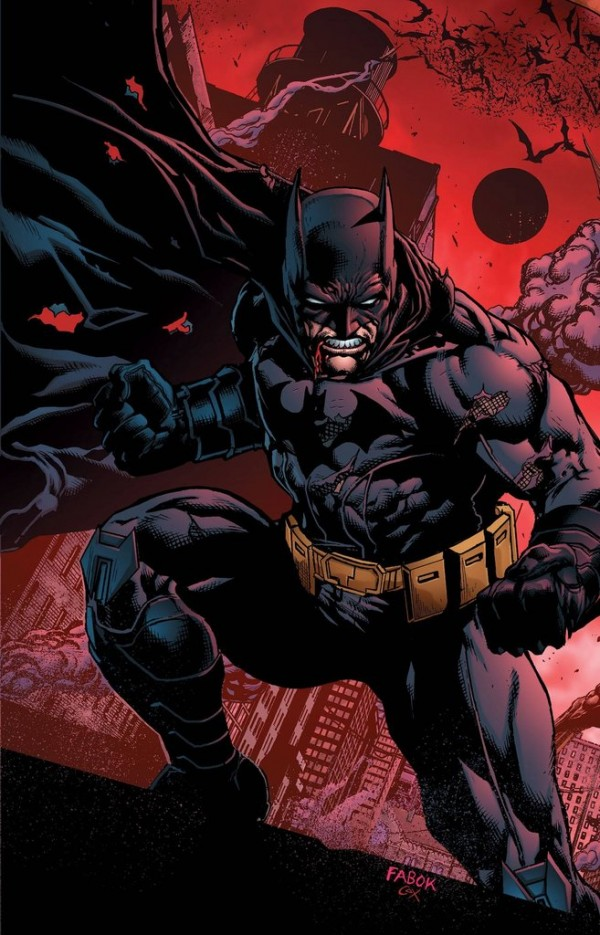
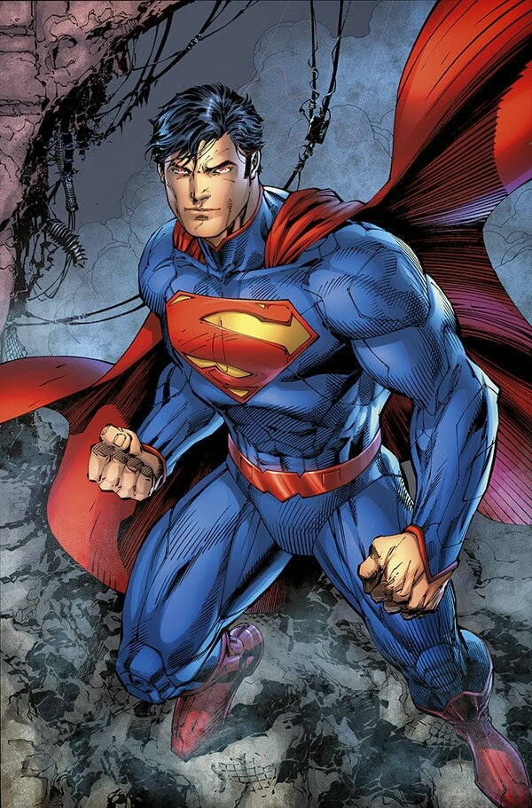

In the world of DC Comics, three heroes reign supreme: Superman, Batman, and Wonder Woman. The trio, and the top 3 members of the Justice League. Commonly referred to as the DC Trinity, they all pack a powerful punch. But they weren't always the closest of friends. Through trials and tribulations, they realized just how much they needed one another.
Through their first adventure, the three heroes learned one another' deepest personal struggles. They learned what they want and what they need. And from their journey, they came to care for each other in a way they didn't before. And thus, DC's Trinity was officially born.
Their Strengths

Each of these heroes have different strengths. Superman is infinitely powerful, and he'll go to the ends of the earth to save even one person. Batman has cleverness and conviction, so much so that he has effective plans for anything and everything. Wonder Woman is so supportive and loyal to her friends that she'll risk her own happiness just to be there for them.
Despite their strengths, they also all have weaknesses. Superman will jump straight into action without a moment's thought. He's eager to help, but often woefully unprepared. Batman has a plan for everything but cannot seem to connect with other people. His buries his emotions and chooses to close himself off to even the people he cares about most. Wonder Woman is loyal to her friends but will wander aimlessly to support them. She feels lost and restless, like she can't put her guard down and call any place a home.
Their Importance

Their connection to humanity. Despite everything that makes these heroes absurdly powerful, and despite the fact that two out of three of them aren't even human, they all understand exactly what it means to be human. They have the same desires that we all do. Superman desires to be accepted. Batman longs for a sense of family. Wonder Woman wants to a place to call home.
Each of them has the ability to let their guard down and support the others. They have to choose to be vulnerable. They have to choose to trust. Batman, a skeptical and cynical man, has the ability to accept Superman as “one of us”. And then, by virtue of accepting him, Superman can feel comfortable accepting Batman into his family. And if Wonder Woman joins the family too, then she'll always feel like she has a place she can call home, as long as she is with her two most trusted allies.
They're the perfect team. Together, they work like a well-oiled machine. A machine more powerful than any other. And in their struggles and their decision to be vulnerable, they show us exactly what it means to be human.